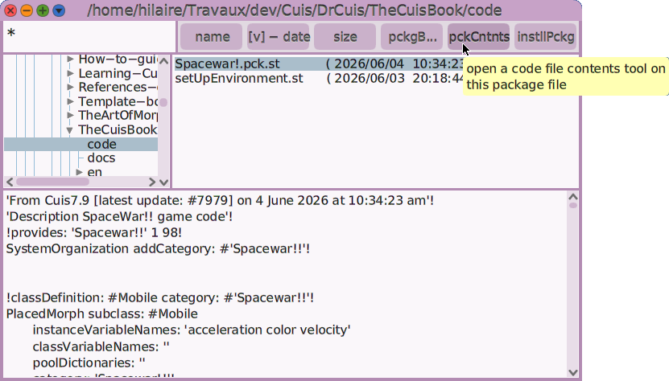
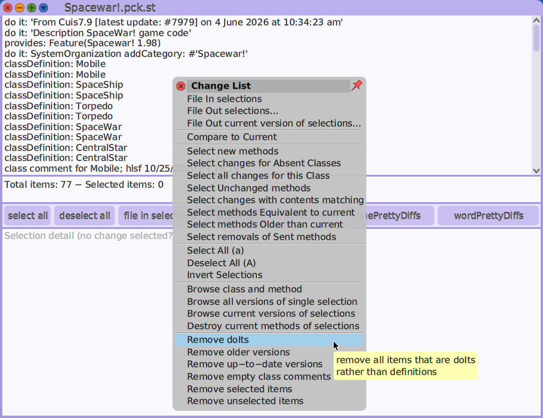
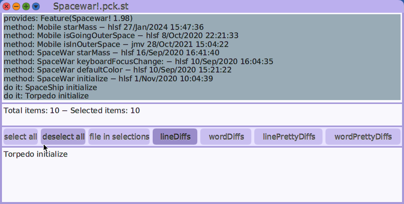

At this point in the book, you have already written a fair amount of code for the Spacewar! game. However, it is very likely there are missing pieces in your code, or you may have inconsistencies with the final source code of the game. Let’s take this as an opportunity to introduce tools to compare the code installed in the Cuis-Smalltalk image with the code from a file, such as a plain .st fileout or a .pck.st package file.
First, you need to get the complete package of the Spacewar! game
found in the appendix; then, invoke the
Cuis-Smalltalk File List tool (World menu →
Open → File List) and search for the
Spacewar!.pck.st package file you just downloaded.

Figure 9.14: File List on Spacewar! package
The File List tool has a pck contents button to examine its
contents against the image code. Pressing this button opens the
Package contents tool in a new window.
At the top, it displays the types of content, which are:
do it. A code snippet executed during package installation (for example, to create new class or method categories defined in the package).
class definition. A change in a class definition, such as attributes and parent classes.
class comment. A change in a class comment.
method. A change in a method’s source code, or a completely new method.

Figure 9.15: Package contents
By default, the tool shows all the contents of the package without
considering the differences with the code installed in the image. To show
only the differences, use the tool’s contextual menu to remove
unnecessary information: choose Remove doIts and Remove
up-to-date versions. Once you have narrowed the list of changes to what
you need, choose select all and then file in selections to
install these changes into the image.

Figure 9.16: A selection of changes to file in
The missing and changed parts of the game will now be installed.
To start it, select and execute SpaceWar new openInWorld
in a Workspace.